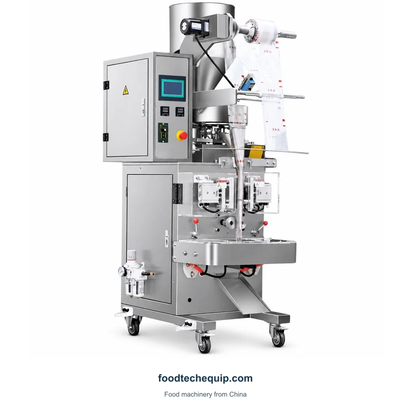
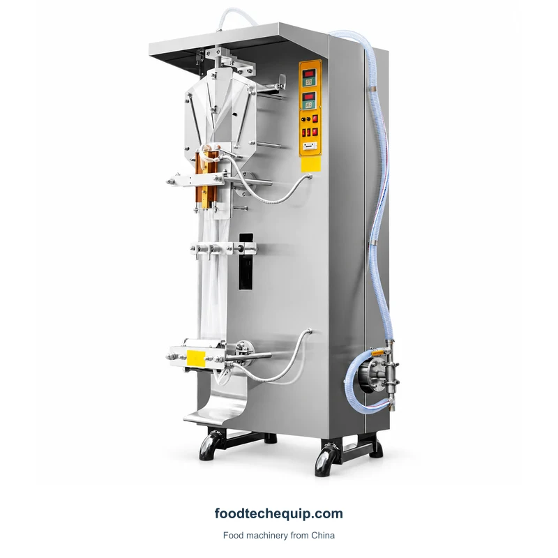

Sachet-Verpackung
Vertikale Verpackungsmaschine für Granulat in kleinen Beuteln
Vertikale Beutelverpackungsmaschine für Granulat mit oberer Produktzufuhr, Folienführung und vorderer Bedienung.
Maschine ansehenVertikale Beutelverpackungsmaschine für Granulat mit Trichter und Folienzuführung. Angegebene Leistung 10–23 Packungen/min.
Maschinenauswahl · Hinweise zur Installation · Fernunterstützung
Produktinformationen ansehen ↓Beschreiben Sie die Korn- oder Granulatgröße, die Zielportion und die Abmessungen des fertigen Beutels. Geben Sie die bei dieser Packungsgröße erforderliche Menge an, damit die Granulatkonfiguration für Ihr Produkt besprochen werden kann.
Definieren Sie eine Abfüll- oder Dosieranwendung ↗Prüfen Sie vor der Bestellung den Füllgewichtsbereich, das Fertigformat des Beutels und die Folieneigenschaften.
| Parameter | Wert | Einheit | Konfiguration |
|---|---|---|---|
| Verpackungsgeschwindigkeit | 10-23 | Packungen/min | Konfiguration der Granulatverpackung |
Eine Sachet-Aufgabe umfasst die Empfangspackung sowie die Portionsvorbereitung. Wenn Sie nur eine abgemessene Dosis für einen bestehenden Verpackungsschritt benötigen, vergleichen Sie die Dosierung separat. Beschreiben Sie das fertige Paket und welche Arbeitsschritte das Angebot umfassen soll.

Vertikale Beutelverpackungsmaschine für Granulat mit oberer Produktzufuhr, Folienführung und vorderer Bedienung.
Maschine ansehen
Verpackungsmaschine für Flüssigkeiten in kleinen Beuteln mit konischem Trichter und geschlossenem unterem Verpackungsbereich.
Maschine ansehen
Vertikale Verpackungsmaschine für Flüssigkeiten in kleinen Beuteln aus PET-Verbundfolie.
Maschine ansehen